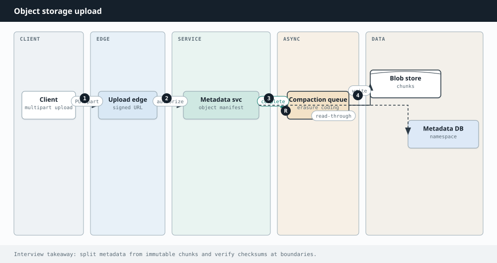

System Design
Chapter 32
Design: Amazon S3

S3 is a service that stores files, called objects, and simply never loses them. That is the whole game: durability at massive scale. Store trillions of objects across cheap, failure prone machines while guaranteeing that a dead disk, or even a whole dead building, never loses your data.
Requirements
Put and get objects by a key, group them into buckets, store objects of any size, and offer extremely high durability and availability with effectively unlimited capacity. Reads and writes are simple by key, but the durability bar is the hard part.
Metadata DB Metadata service object index Client API Node · replica Storage service Node · replica Node · replica Small metadata is stored and queried separately from the object bytes, which are copied across many nodes.
The key decisions
The first move is to separate metadata from the data. Metadata (where an object lives, its size, its permissions) is small and queried constantly, so it lives in a fast, sharded store. The object bytes are huge and streamed, so they go to dedicated storage nodes. These two have completely different access patterns, and splitting them lets each scale on its own.
Durability comes from redundancy across failure domains. You either keep several full copies (replication) or use erasure coding, which splits an object into fragments plus parity so the whole
thing can be rebuilt from a subset. Either way the pieces are spread across separate disks, racks, and data centers, so no single failure loses data. A background process constantly watches for failed disks and re creates the lost copies. On consistency, S3 today offers strong read after write for new objects, a place where the classic CAP trade off shows up directly.
PROS CONS Replication is simple and makes reads Replication multiplies storage cost by fast from any copy the number of copies Erasure coding gives the same durability Erasure coding is cheaper but costs using far less storage more CPU to rebuild on read Separating metadata from data lets each Re replicating after failures uses real scale independently background bandwidth
E R A S U R E C O D I N G I N O N E L I N E
Instead of storing three full copies, split the object into say ten data fragments and add four parity fragments, then scatter all fourteen. You can lose any four fragments and still rebuild the object perfectly. You get durability similar to replication while storing far less than three full copies, which is why huge storage systems lean on it.
Going Deeper
Erasure coding, and durability math
Keeping three full copies is simple but triples your storage. Erasure coding does better. You split an object into k data fragments and compute m parity fragments, then scatter all k plus m across different nodes. You can lose any m of them and still rebuild the object exactly, so you reach durability similar to replication while storing far less than three copies. Spreading the fragments across separate racks and data centers is what lets a system quote durability like eleven nines, because the chance of losing more than m fragments at the same moment becomes astronomically small.
Erasure coding splits an object into data and parity fragments, so it survives The service records the object's metadata, its key, size, and location, in the metadata store. It splits the bytes and writes copies, or erasure coded fragments, across several nodes in A background process keeps watching for failed disks and re creates any lost copies